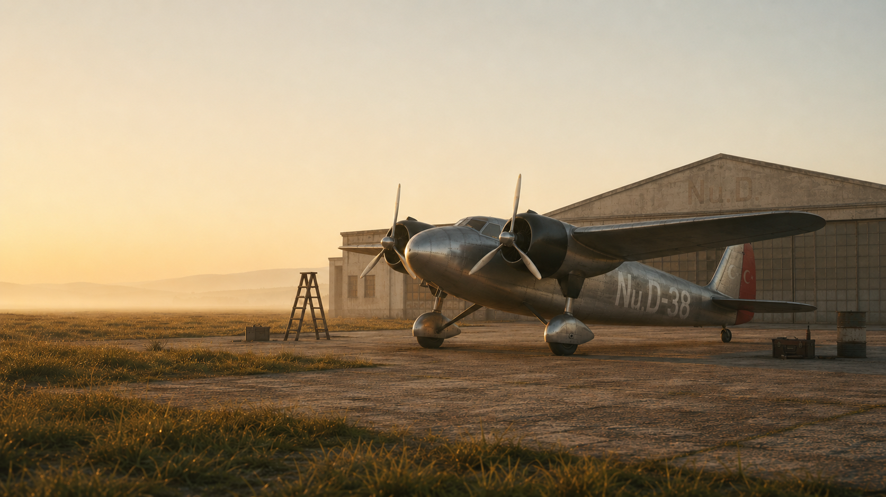
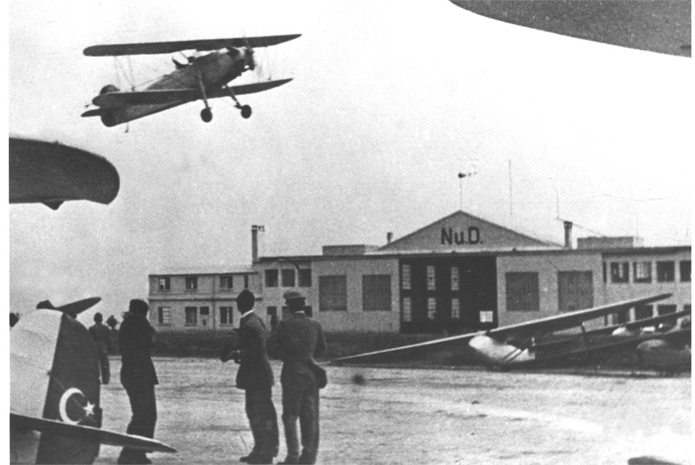
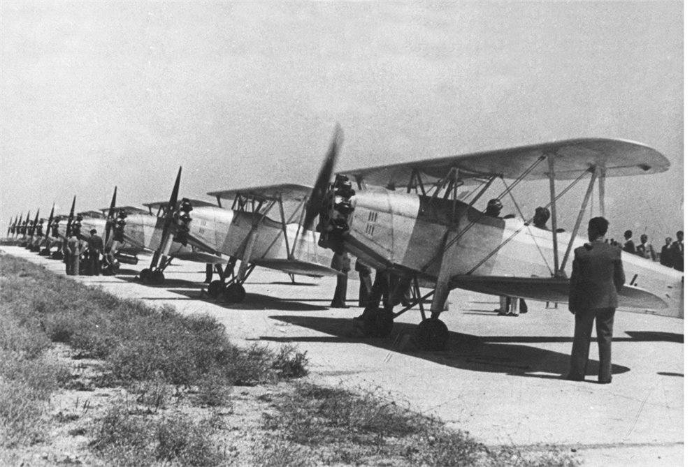
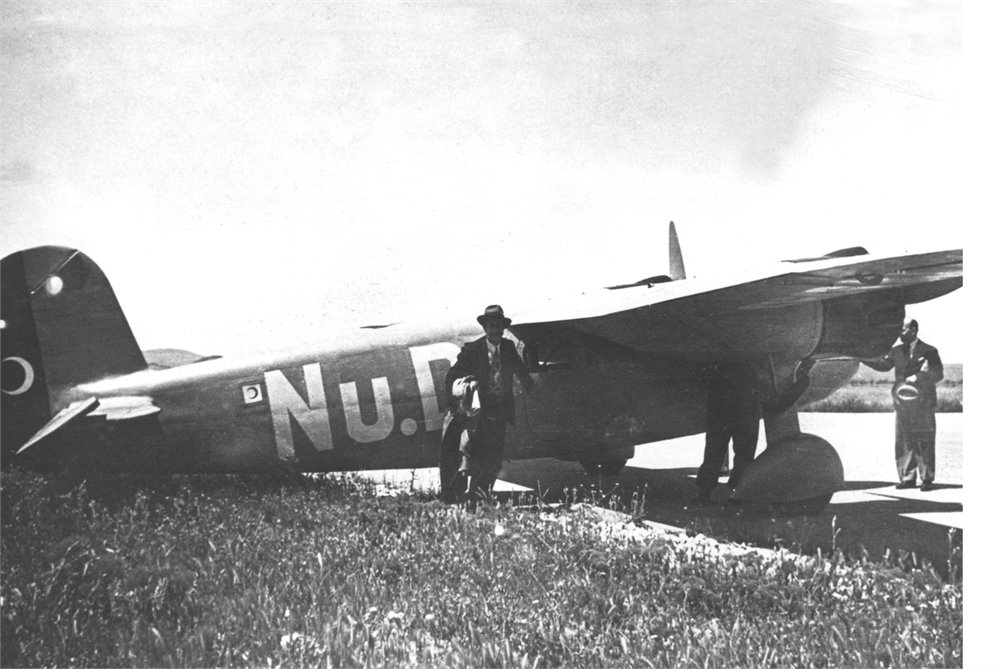
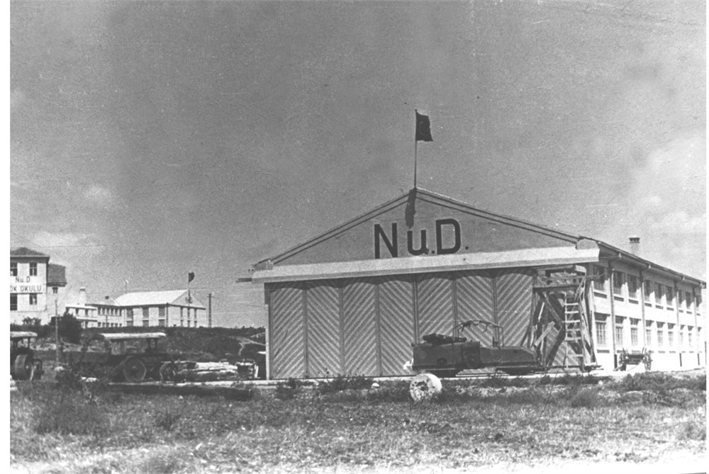
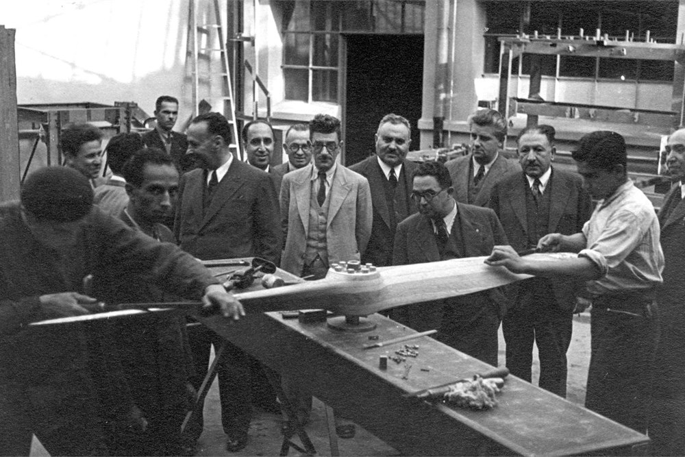
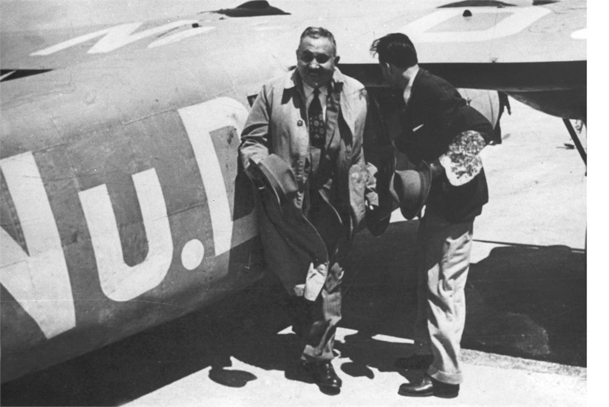
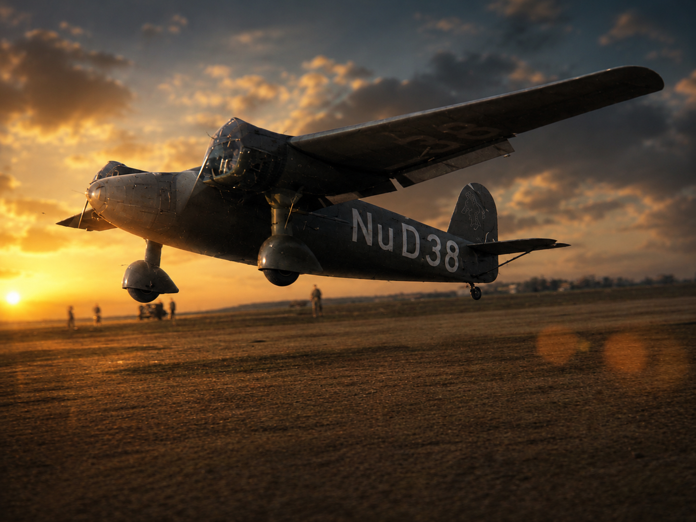

Beşiktaş Tayyare Atölyesi
Açılış, hikayeyi üretim fikrine bağlar: ithal etmek yerine tasarlamak, parça üretmek ve yeni bir sanayi dili kurmak.

Sınırlı erişimli deneyim
Unutulmuş bir havacılık vizyonu; VR, sinematik anlatı ve fiziksel deneyim diliyle kokpitten yeniden duyulur hale geliyor.
Arşiv, kurum, üretim ve stratejik ortaklık alanlarında anlamlı katkı sunabilecek davetliler için erken gösterim.
Deneyim
Kullanıcı, Nu.D-38'in kokpitine girerek Yeşilköy'den İstanbul üzerine uzanan kısa ama güçlü bir dönem uçuşu yaşar. Amaç yalnızca uçmak değil; erken Cumhuriyet döneminin girişimci ruhunu, teknik cesaretini ve yarım kalmış vizyonunu hissettirmektir.
Üç bölümlü rota
Açılış, hikayeyi üretim fikrine bağlar: ithal etmek yerine tasarlamak, parça üretmek ve yeni bir sanayi dili kurmak.
Oyuncu piste ve hangarlara yakın bir kokpitten havalanır. Marmara ufku, meydan dokusu ve motor sesi rotanın ilk hafızasını kurar.
1942'de Yüksek Mühendis Mektebi'ne bırakılan mektuplar, uçuşu yalnızca teknik bir başarı değil, yeni kuşaklara yapılan bir çağrı haline getirir.
Arşiv omurgası
Nuri Demirağ'ın tayyare fabrikası girişimi, deneyimin ana duygusunu belirler: hikaye yalnızca uçmakla değil, uçağı yapabilmekle ilgilidir.
Yeşilköy'deki endüstriyel izler, pist çevresinin ölçeğini, hangar cephesini ve oyuncunun kalkıştan önce okuyacağı mekan karakterini şekillendirir.
Tasvir-i Efkar'da yer alan anlatım, Nu.D uçaklarının Yüksek Mühendis Mektebi üzerinde öğrencilere havacılığı teşvik eden mektuplar bıraktığını aktarır.
Nu.D-38, deneyimin taşıyıcı nesnesi. Kokpit, dış form, ses ve hareket hissi bu uçağın etrafında aynı kalite duygusuna bağlanır.
Arşivden izler






Deneyim dili
Kokpit yakınlığı Oyuncunun ilk bakışı, el mesafesindeki göstergeler ve yüzeylerle güven veren bir uçuş hissi kurar.
Okunur İstanbul Yeşilköy, Marmara kıyısı ve şehir silueti; yüksekliği, yönü ve mesafeyi anlamlı kılacak biçimde tasarlanır.
Sade tarih anları Arşivden gelen bilgi, uçuşun ritmini kesmeden kısa, yerinde ve hatırda kalır anlara dönüşür.

Mevcut prototip
Unreal Engine tabanlı prototip; VR uçak kontrolü, kolaylaştırılmış uçuş hissi, rota yönlendirmesi, İstanbul işaretleri, kokpit geometrisi, çalışan gösterge iğneleri, NuD-38 görsel entegrasyonu, Yeşilköy yerleşimi ve katmanlı uçuş sesleri üzerinde ilerliyor.
Deneyim formatları
NuD-38, yalnızca ev tipi VR için değil; kokpit oturumu, sergi gösterimi ve müze/etkinlik kurulumlarına uyarlanabilecek bir deneyim diliyle ele alınıyor. Fiziksel düzenek, doğru ortaklık ve üretim zemini oluştuğunda değerlendirilecek üst seviye bir sunum katmanı olarak korunuyor.
Gelişim ufku
İlk hedef, Nu.D-38'in hissini, Yeşilköy'den İstanbul'a uzanan kısa uçuşu ve özel gösterimlere uygun prototipi tek bir güçlü sahnede toplamak.
Fotoğraf, belge, teknik referans, müze ve kültür teknolojisi iş birlikleriyle deneyimin tarihsel zemini ve sunum biçimi derinleşir.
Proje olgunlaştıkça oyun, film ve sergi katmanları ana deneyimin doğal uzantıları olarak değerlendirilebilir.
Özel gösterim ve ortaklık